B+ 树数据结构
原文：https://www.studytonight.com/advanced-data-structures/b-plus-trees-data-structure
A B+ 树是 B 树的扩展，使得搜索、插入和删除操作更加高效。我们知道 B 树允许内部节点和叶节点中的数据指针和键值，这当然成为 B 树的缺点，因为在特定级别插入节点的能力降低，从而增加了节点级别，这当然是没有好处的。B+ 树通过简单地在叶节点级存储数据指针并且只在内部节点存储键值来减少这个缺点。还应该注意的是，叶级的节点是相互链接的，因此使得数据指针的遍历更加容易和高效。
当我们想要在主存中存储大量数据时，B+ 树就派上了用场。因为我们知道主内存的大小没有那么大，所以利用 B+ 树，它的内部存储密钥的节点(访问记录)存储在主内存中，而包含数据指针的叶节点实际上存储在辅助内存中。
B+ 树的图示如下:
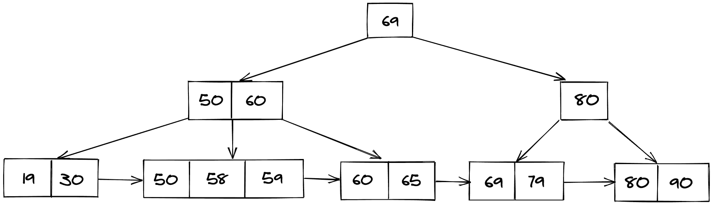
为什么是 B+ 树？
B+ 树存储记录，这些记录以后可以在相同次数的磁盘访问中获取。
B+ 树的高度保持平衡，并且与 B 树相比非常小，即使存储在 B 树中的记录数量相同。
拥有更少的级别数使得访问记录变得非常容易。
由于叶节点像链表一样相互连接，我们可以很容易地按顺序搜索元素。
在 B+ 树中插入
在 B+ 树中执行搜索操作，以检查这个新节点应该到达的理想铲斗位置。
如果存储桶未满(不违反 B+ 树属性)，则将该节点添加到该存储桶中。
否则，将节点拆分为两个节点，并将中间节点(准确地说是中间节点)推到父节点，然后插入新节点。
如果父节点在那里，并且当前节点不断变满，请重复上述步骤。
考虑下面显示的图示，以理解 B+ 树中的插入操作:
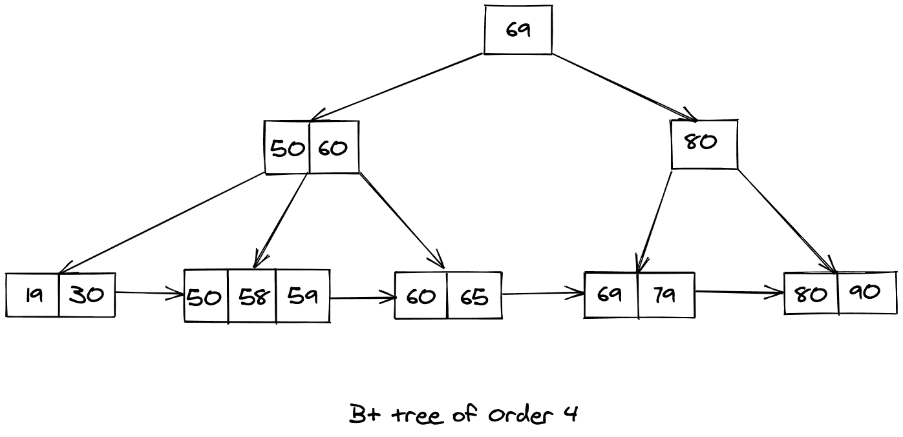
让我们尝试在上面显示的 B+ 树中插入 57，得到的 B+ 树将如下所示:
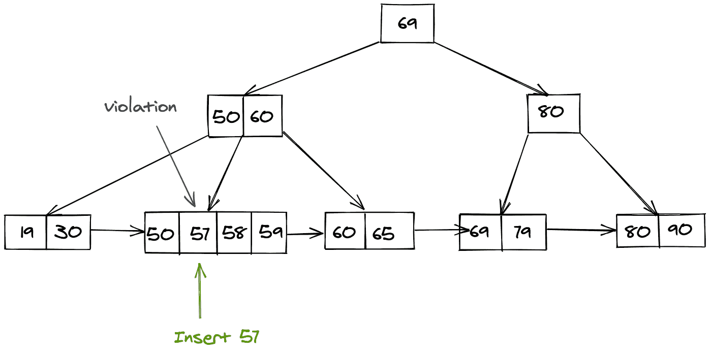
我们知道，我们插入值为 57 的键的桶(节点)现在违反了 B+ 树的属性，因此我们需要按照上面的步骤分割这个节点。拆分后，我们将中间节点推送到父节点，生成的 B+ 树如下所示:
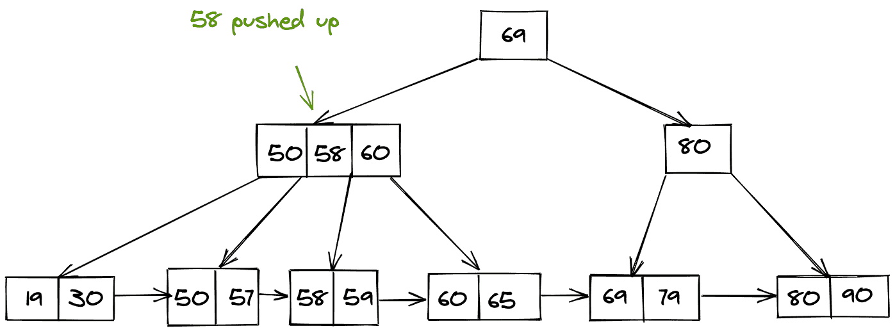
在 B+ 树中搜索:
在 B+ 树中搜索类似于在 BST 中搜索。如果当前值小于搜索关键字，则遍历左侧子树，如果大于，则首先遍历当前桶(节点)，然后检查理想位置在哪里。
考虑下面 B+ 树的表示来理解搜索过程。假设我们想在下面给定的 B+ 树中搜索一个值等于 59 的键。
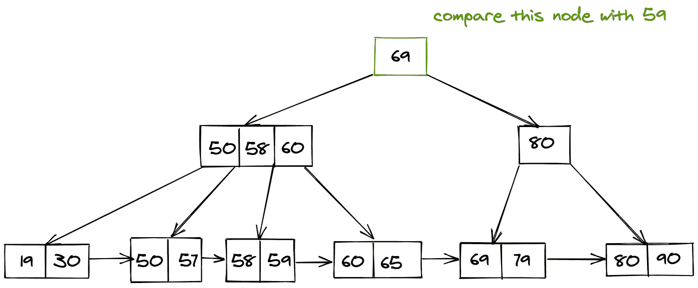
现在我们知道 59 < 69，因此我们遍历左边的子树。
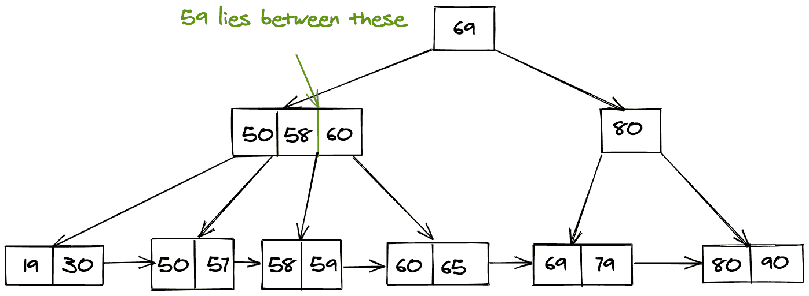
现在我们已经找到了内部指针，它将指向我们需要的搜索值。
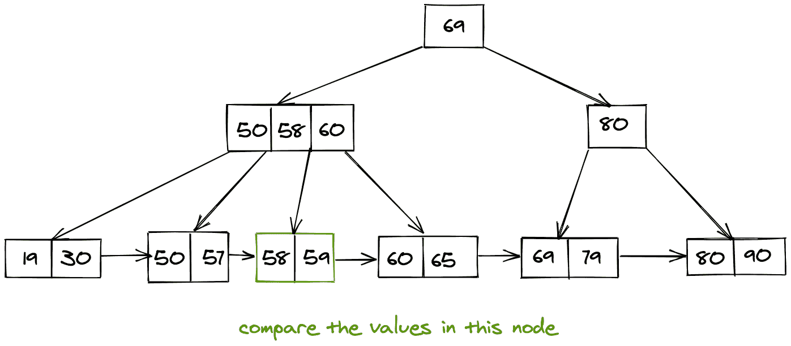
最后，我们以线性方式遍历这个桶，以获得所需的搜索值。
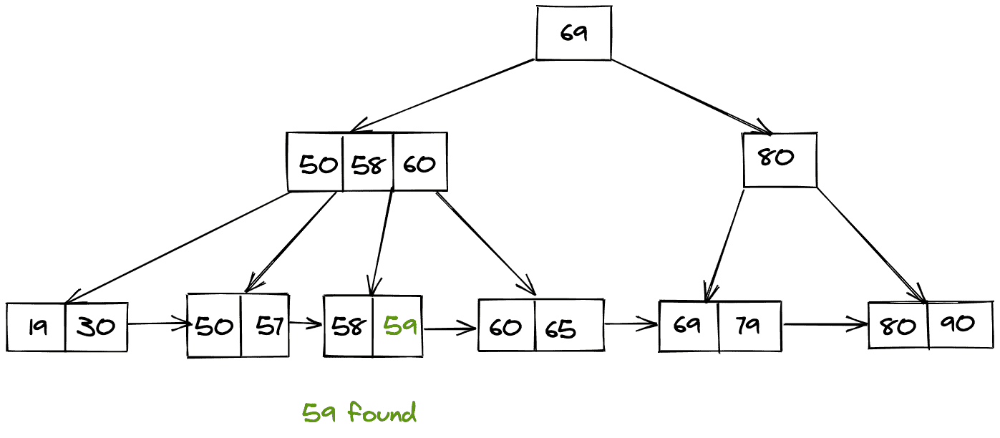
B+ 树中的删除:
删除是一个有点复杂的过程，出现了两种情况:
它只存在于叶级
或者，它还包含一个来自内部节点的指针。
仅删除叶节点:
如果它只是作为叶节点位置出现，那么我们可以简单地删除它，为此我们首先进行搜索操作，然后删除它。
考虑如下所示的图示:
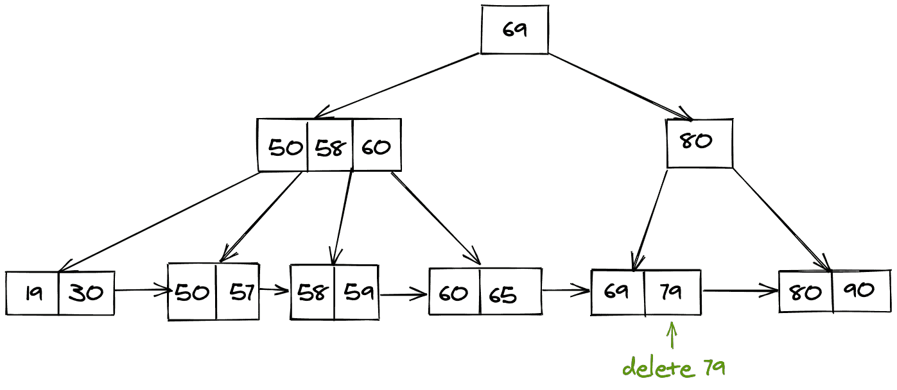
删除 79 后，剩下的是下面的 B+ 树。
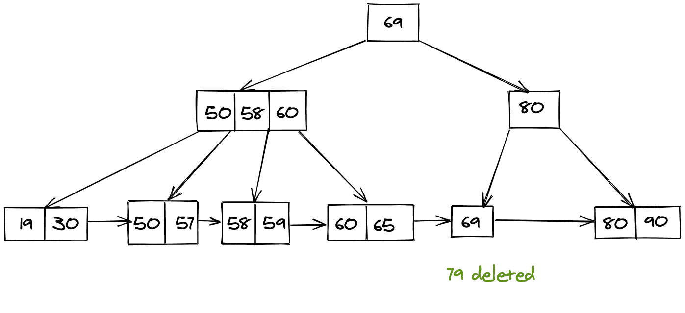
如果存在指向叶节点的指针，则删除:
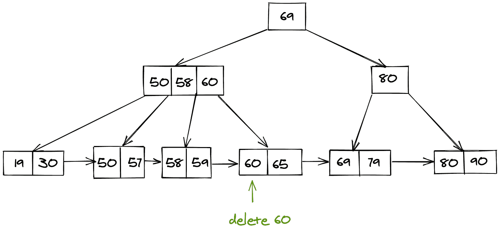
找到要删除的节点后，我们还必须删除指向该节点的内部指针，然后我们最终需要移动下一个节点指针以移动到父节点。
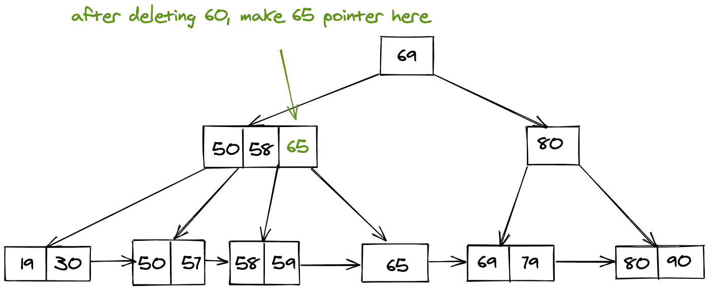
结论:
我们了解了什么是 B+ 树，以及它与 B 树的区别。
然后我们了解了为什么我们需要 B+ 树。
最后，我们学习了对 B+ 树型搜索、插入和删除记录(键)的不同操作。